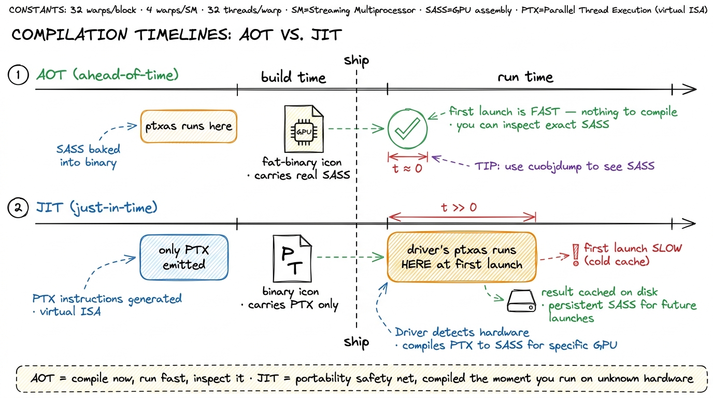
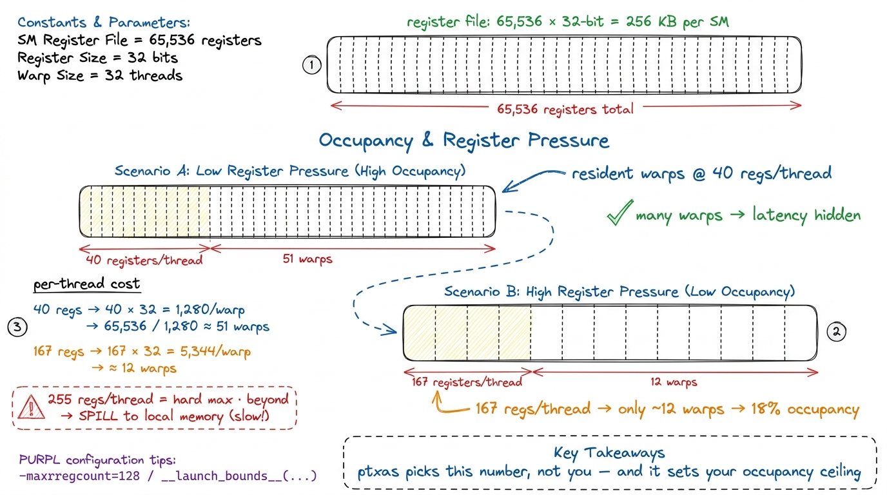
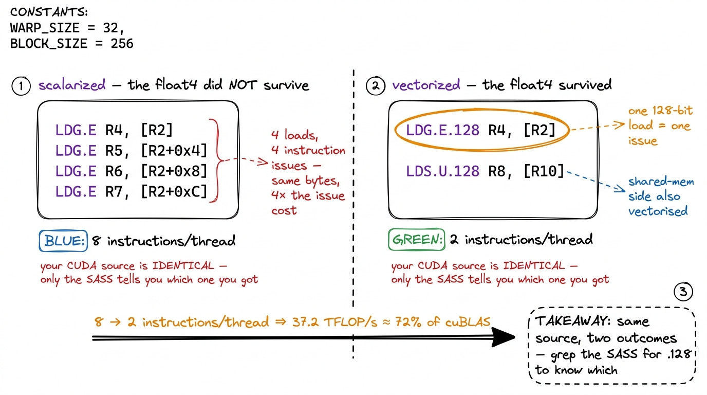
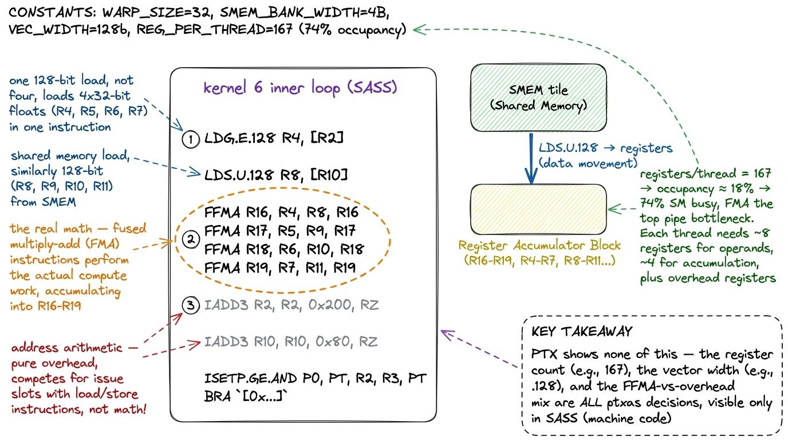
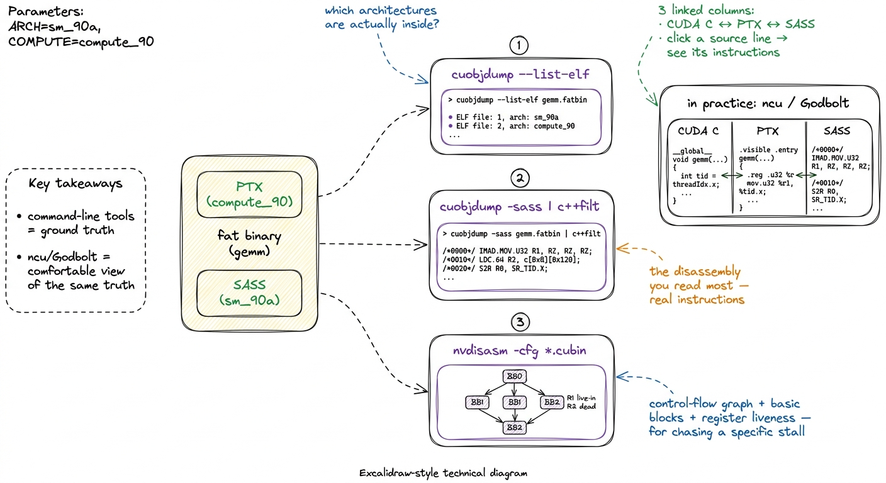
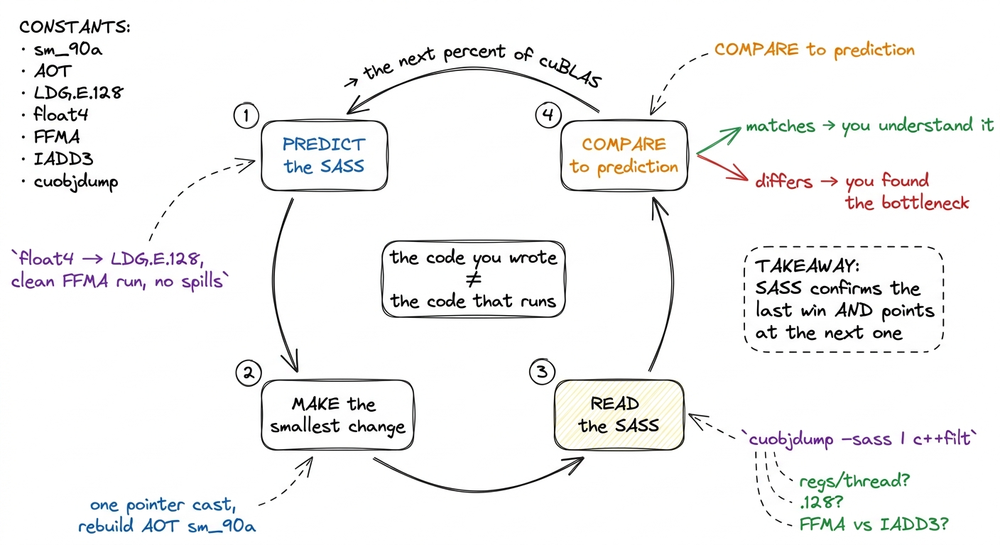

PTX vs SASS: the compilation story PTX
The first time I profiled a kernel and the numbers refused to match my mental model, I learned an uncomfortable truth: the code I wrote is not the code that runs. I had written a tidy for loop with one multiply-add per element. The profiler told me each thread was issuing four times as many instructions as I expected, and burning most of them on arithmetic I never typed. Where did they come from? They came from the two invisible compilation stages sitting between my source and the silicon. This article is about those stages — nvcc → PTX → ptxas → SASS — and about the single most useful habit in GPU performance work: learning to read what the machine actually decided to do.
If you have never written a line of CUDA, don't worry. We are going to build this from the ground up. By the end you'll be able to answer three questions about any kernel — how many registers does it use, did my vector load survive, and where is the instruction issue going — and you'll know exactly which tool answers each one. Those three questions are the whole game.
The question this article answers
Here is the question, stated plainly: when I write CUDA C++ and it runs slower than I expect, how do I find out what really happened to my code?
The naive answer is "read the source again." But the source is a polite fiction. Between your .cu file and the electrons moving through a Streaming Multiprocessor — the SM, the GPU's basic unit of execution, a little independent processor with its own registers and scheduler — there are two compilers, each rewriting your code aggressively. One of them does the heavy lifting that decides your performance: it allocates your registers, reorders your loads, fuses your math, and sometimes quietly spills your data to slow memory behind your back. To reason about performance, you have to learn what these stages produce, and eventually read the final output directly.
Let me give you the mental model up front, because we'll reuse it in every section.
 figure rendering · The central picture for the whole article. Two translators sit between
figure rendering · The central picture for the whole article. Two translators sit betweenHold onto that picture of two translators. Almost everything below is a detail of who does what, and why you must eavesdrop on the second translator rather than the first.
Two languages, not one
CUDA has two low-level representations, and conflating them is the single most common source of confusion when people start reading compiler output. Let's meet both, slowly.
PTX stands for Parallel Thread Execution. It is a virtual instruction set architecture. That word "virtual" is doing a lot of work, so let's unpack it. A normal assembly language describes a real chip: these are the real registers, this is the real add instruction, this is what the silicon literally decodes. PTX describes an imaginary chip — an idealized GPU that does not physically exist. On this imaginary machine there are infinitely many registers, the instruction set is clean and typed, and nothing is tied to any particular piece of hardware.1 The Modal GPU glossary calls PTX a "narrow waist" — the thin, stable interface that separates the software world above from the hardware world below, the same way the IP protocol is the narrow waist of the internet. Everything above compiles down to PTX; everything below compiles up from it.
Why would anyone want an instruction set for a machine that doesn't exist? Because it's a contract. PTX is versioned by compute capability — a version number meaning, roughly, "the minimum SM architecture that can run this." You target it with compute_XY names, like compute_90 for Hopper. And here is NVIDIA's promise: PTX is forward-compatible. PTX you ship today will still run on GPUs that don't exist yet, as long as their compute capability is high enough.
SASS is the other language. It stands for Streaming ASSembler — and yes, the "Streaming" is the very same one as in Streaming Multiprocessor, because SASS is the assembly the SMs literally execute.2 The glossary is charmingly hedged here: "the 'Streaming' in 'Streaming Assembler' presumably refers to the Streaming Multiprocessors." Even NVIDIA-adjacent documentation isn't 100% sure of the etymology. That hedge tells you something about how lightly documented SASS is. SASS is the native instruction set: the real machine code the hardware decodes, tied to exactly one SM architecture, versioned with sm_XY names like sm_90. It is the lowest-level human-readable form your code ever takes before it becomes raw device microcode.
Let me sharpen the one distinction that matters for everything that follows:
PTX is what the front-end compiler wants. SASS is what the GPU actually does.
They are not the same, and the gap between them is exactly where your performance lives or dies.
 figure rendering · PTX lives on a roomy, imaginary machine with infinite registers. SASS
figure rendering · PTX lives on a roomy, imaginary machine with infinite registers. SASS There's a subtlety on the SASS side worth flagging now. Hopper's tensor-core and memory-engine features — wgmma, TMA — live behind the target sm_90a, with a trailing a. That a means "architecture-specific": it unlocks Hopper-only instructions that are not forward-portable. So on the SASS side you sometimes deliberately give up the portability that PTX gave you, in exchange for opcodes that only exist on one generation.3 The a suffix means "accelerated / architecture-specific." Code built for sm_90a will not JIT forward to a future architecture the way plain compute_90 PTX will — you're opting out of portability to reach Hopper-only opcodes. Blackwell repeats the pattern one generation later with sm_100a and its tcgen05 / TMEM tensor-core path. Portability and peak performance are, at the SASS layer, genuinely at odds.
Who does what: nvcc and ptxas
It helps to be precise about the division of labor, because "the compiler" is really two compilers wearing a trench coat. Let's separate them.
nvcc is the CUDA Compiler Driver. Read that title carefully — it's a driver, an orchestrator, not the thing that emits machine code. When you run nvcc gemm.cu, it does three things. First, it splits your .cu file into two halves: the host code (the ordinary C++ that runs on the CPU) and the device code (the __global__ kernels that run on the GPU). Second, it hands the host half to your system compiler — gcc or clang — which knows nothing about GPUs. Third, it lowers the device half to PTX. Notice what has not happened yet: no SASS exists. nvcc produced portable PTX and stopped.
ptxas is the assembler that turns PTX into SASS. Despite the humble name — it looks like a boring "PTX assembler" utility — this is the star of the show. This is where the heavy optimization happens: register allocation, instruction scheduling, instruction selection, and the mapping onto real hardware issue slots. Let me make that concrete, because these four jobs are the whole reason your source misleads you:
- Register allocation. PTX has infinite virtual registers; the real SM has a fixed, finite file.
ptxasdecides that your kernel gets, say, 40 real registers per thread instead of 64. That single number sets your occupancy — more on this soon. - Instruction scheduling.
ptxasreorders your loads and math to hide memory latency, so a load you wrote "before" a computation might get hoisted far earlier. - Instruction selection.
ptxasfuses a separate multiply and add into oneFFMA(fused multiply-add), turning two of your instructions into one of the machine's. - Mapping to issue slots. It lays instructions onto the SM's real pipelines and dispatch ports.
So when someone says "the compiler decided to spill to local memory," they mean ptxas decided. When someone says "the compiler scalarized my vector load," they mean ptxas did. The front-end (nvcc) never made those calls. This is why, when you go hunting for a performance mystery, you go looking at the output of ptxas — the SASS — and not at PTX, which was written before any of these decisions were made.
 figure rendering · The full pipeline. nvcc lowers your code to portable PTX; ptxas — the
figure rendering · The full pipeline. nvcc lowers your code to portable PTX; ptxas — the The output of the whole chain is a fat binary — an ordinary ELF executable that conforms to your host ABI, but with PTX and/or SASS for one or more GPU architectures tucked inside it. nvcc gives you two knobs to control what goes in: --gpu-architecture chooses which PTX to generate, and --gpu-code chooses which SASS variants to bake in. A typical release build embeds SASS for the exact cards you own plus PTX as a fallback. Fast on the hardware you know, still-runs on hardware you don't.
Two moments SASS can be born: AOT and JIT
If SASS is what the GPU runs, and ptxas is what makes SASS, then a natural question is: when does ptxas run? There are exactly two answers, and the difference has real consequences for both your latency and your ability to debug.
Ahead-of-time (AOT). Here ptxas runs at build time, on your machine, and the resulting SASS is baked straight into the fat binary. This is what you want in production. There's no compilation happening at launch, so no surprise latency, and — crucially — you can open the binary and inspect the exact SASS that will run. If you pass an sm_ target like --gpu-code=sm_90, you get AOT SASS for that architecture.
Just-in-time (JIT). Now suppose the binary only carries PTX for the architecture you land on. Maybe you shipped compute_90 PTX but no matching sm_90 SASS. Or maybe you're running on a card newer than anything you compiled for — a 2016 binary on a 2024 GPU. In that case the driver steps in: it carries its own embedded copy of ptxas, and at the first launch of the kernel it compiles the PTX to SASS right there, on the spot. This is the exact mechanism that makes forward compatibility real. Your front-end never saw that future GPU, but the driver's ptxas did.4 The JIT result is cached — by default on disk, in the CUDA compute cache — so you pay the compile cost once per (binary, driver, GPU) combination, not on every run. A cold cache is why the first kernel launch of a freshly-deployed binary is sometimes mysteriously, one-time slow. Warm it in a health-check before you take traffic.
Let me draw the difference, because "when does the compiler run" is easy to say and easy to forget.

figure rendering · AOT compiles at build time and lets you inspect the result; JIT compilThe practical rule fits on a sticky note: build AOT SASS for the hardware you actually run on; keep PTX as a portability net. JIT is insurance, not a performance strategy. And notice the debugging cost of relying on it: the SASS that runs under JIT is one you never inspected at build time. You gave up your window into the machine.
Why you read SASS, not PTX
Here is the part that separates people who tune kernels from people who merely write them, and it's worth slowing down for.
My hypothesis, the very first time, was that PTX would tell me what the hardware did. It seemed reasonable — PTX is lower-level than my C++, it's got registers and instructions, surely it's close to the metal? It is not. PTX is written before the two decisions that matter most — register allocation and instruction selection — have been made. Reading PTX to understand performance is like reading a recipe to find out what the finished dish tastes like. Useful, but it's not the meal.
When your profile disagrees with your intuition, PTX will mislead you and SASS will not, because ptxas sits between them and rewrites almost everything. Concretely, there are three questions only SASS can answer. We'll take them one at a time, and each one comes with a number you can compute by hand.
Question 1: How many registers am I actually using?
To see why this matters, we need one idea: occupancy, and where registers come from. Every SM has a fixed pool of registers — a register file of 65,536 32-bit registers, which is 65536 × 4 bytes = 256 KB per SM. Every thread you launch draws its registers from that one shared pool. So there's an iron budget: if each thread demands a lot of registers, fewer threads fit at once.
Let's do the arithmetic on a napkin. Threads run in groups of 32 called warps. Suppose ptxas gives each thread 40 registers. Then one warp needs 40 × 32 = 1,280 registers. Divide the file: 65,536 / 1,280 ≈ 51 warps can be resident on the SM at once. That's a lot — plenty of warps for the scheduler to switch between while some are stalled waiting on memory, which is exactly how a GPU hides latency.
Now suppose ptxas decides your kernel needs 167 registers per thread. One warp now costs 167 × 32 = 5,344 registers. Divide: 65,536 / 5,344 ≈ 12 warps. You just lost three-quarters of your resident warps. Occupancy collapses to something like 18%, and if there aren't enough warps to cover the memory latency, the scheduler starves — you see "not selected" stalls where a scheduler had no ready warp to issue.5 Low occupancy is not automatically bad — this is the surprising part. In the GEMM ladder, the warp-tiling kernel that reaches 93.7% of cuBLAS runs at only ~18% occupancy on purpose, holding fat register-resident accumulators. Once arithmetic intensity is high enough to keep the FMA pipe busy, you don't need many warps to hide latency, so trading occupancy for registers is a win. The rule is "enough warps to hide latency," not "maximum warps."
And here is the punchline: PTX cannot tell you this number. PTX has infinite virtual registers by definition — it never allocated anything. Only SASS, or ncu's "registers per thread" readout, has the real figure. The 167 above is not hypothetical; it's the measured register count of the warp-tiling GEMM kernel on H100.

figure rendering · The register budget, worked by hand. Each thread's registers come outOne more hard limit lives on this figure: 255 registers per thread is the ceiling. Ask for more and ptxas spills — it stashes the overflow in "local memory," which despite the name lives out in slow global DRAM. A spill is a silent performance cliff, and again, you only see it in the SASS (as STL/LDL instructions) or in the profiler.
Question 2: Did my vectorized load actually vectorize?
This one is my favorite, because the source code looks identical whether it works or not.
Start from a basic fact about memory. A single float is 32 bits, 4 bytes. A float4 — four floats packed together — is 128 bits, 16 bytes. When you cast a pointer to float4* and load through it, you're asking the hardware to move 16 bytes in one instruction instead of four separate 4-byte loads. Why do you care? Because instruction issue is itself a scarce resource. Even if the bytes are the same, four instructions cost four trips through the warp scheduler; one instruction costs one.6 This is a subtle and commonly-confused point: coalescing and vectorization are different things. Coalescing lets the hardware merge the memory transactions of 32 threads into fewer trips to DRAM — it helps bandwidth. Vectorization reduces the number of instructions issued per thread. You can have perfectly coalesced access that still issues four separate scalar loads per thread; every scalar load is still its own instruction. Vectorizing fixes the instruction count; coalescing fixes the transaction count. You usually want both.
So you wrote float4. Did ptxas honor it? Here's how you know for certain. In SASS, a 128-bit global load is a single LDG.E.128 instruction (or LDG.E.CI.128 through the read-only cache). A 128-bit shared-memory load is a single LDS.128 (you may see it as LDS.U.128). If instead you see four separate LDG.E instructions where you expected one LDG.E.128, your float4 got scalarized — ptxas unpacked it back into four scalar loads, and you're paying four times the instruction issue for the same bytes.
This is not visible in your CUDA source — the source says float4 either way — and it's not reliably visible in PTX. It is a ptxas outcome you can only confirm in the SASS. And the payoff is measurable: in the GEMM ladder, converting the loads to float4 dropped the instructions issued per thread from 8 to 2, and the kernel jumped to 37.2 TFLOP/s — about 72% of cuBLAS, roughly a 2× speedup over the scalar version. That entire win is invisible in the source and confirmed only by seeing LDG.E.128 and LDS.U.128 show up in the disassembly.

figure rendering · The same `float4` source can compile two ways. Only the SASS distinguifloat4 source can compile two ways. Only the SASS distinguishes four scalar LDG.E from one LDG.E.128 — and that difference is a 2× kernel.Question 3: Where is the instruction issue going?
The third question is the most open-ended: of all the instructions the SM is issuing, how many are doing your actual math, and how many are pure overhead?
A GEMM inner loop that you picture as "one FMA per element" rarely looks that clean in SASS. It unrolls into a wall of FFMA instructions — good, that's the real math, fused multiply-add. But threaded between them you'll often find address arithmetic: IADD3, SHF (shift), LOP3 (a 3-input logic op the compiler uses for bit tricks), all computing pointer offsets into your tiles. Those instructions issue too, and they compete for the same scheduler slots as your FFMAs. If there are three IADD3s for every FFMA, most of your issue bandwidth is spent on bookkeeping, not on multiplying.
This is exactly where the profiler's cryptic labels start to make sense — but only when you have the SASS listing next to them. "Not selected" means a scheduler had a warp but chose not to issue (often occupancy-starved). "Stalled" means the warp it wanted wasn't ready. The mix of FFMA versus address arithmetic in the SASS tells you whether the fix is more math per instruction (better tiling) or fewer overhead instructions (better indexing).

figure rendering · Reading SASS as evidence. The vector width, the register count, and thThree questions, three numbers, one source of truth. Registers per thread sets occupancy. Vector width sets instruction issue for memory. The FFMA-to-overhead ratio sets instruction issue for compute. None of the three can be read off your CUDA source, and none can be trusted from PTX. All three are ptxas decisions, and all three are a grep away once the SASS is in front of you.
The tools: cuobjdump and nvdisasm
You don't need a debugger for any of this. Two command-line utilities from the CUDA Binary Utilities do the whole job, and they're already on any machine with the toolkit installed.
cuobjdump inspects fat binaries. Point it at your compiled executable or a .cubin object and it will:
- list the embedded code with
cuobjdump --list-elf(so you can see which architectures the binary actually carries), - dump the PTX with
cuobjdump -ptx, - and — the one you'll reach for most — disassemble the baked-in SASS with
cuobjdump -sass.
nvdisasm is the lower-level disassembler that operates on .cubin / ELF objects directly. It does everything cuobjdump -sass does and then some: it can reconstruct control-flow graphs with nvdisasm -cfg, annotate register liveness, and emit output organized into basic blocks. That basic-block structure is what you want when you're chasing why the scheduler stalled inside one specific block, not just what the instructions are.
Here's a concrete end-to-end workflow. Say you want the SASS for one kernel, built for Hopper, without leaving the shell:
# compile with real SASS for Hopper (AOT), keep line info for source mapping
nvcc -arch=sm_90a -lineinfo -o gemm gemm.cu
# disassemble the SASS that will actually run (c++filt demangles the names)
cuobjdump -sass gemm | c++filt
# or reconstruct the control-flow graph for one problem block
nvdisasm -cfg gemm.cubin > gemm_cfg.dotThat --list-elf step is worth a habit of its own: it's how you catch the embarrassing case where you thought you built AOT SASS for your card but actually shipped PTX-only and are silently JIT-ing on every fresh deploy.

figure rendering · The disassembly toolkit. cuobjdump and nvdisasm are the ground truth;In day-to-day work, most of us read SASS through Nsight Compute (ncu) or Godbolt rather than raw cuobjdump, because both put the CUDA C, the PTX, and the SASS in three linked columns and let you click a source line to see the instructions it became. Godbolt in particular is how a lot of people first see the float4-to-LDG.E.128 mapping with their own eyes. But the command-line tools are the ground truth, and they're what you reach for when the kernel is buried inside a larger binary and you just need a yes/no answer: did my float4 become an LDG.E.128?
A worked loop: predict, then read
Let me tie the three questions together into the loop I actually run, using the vectorization win as the worked example, because it shows the whole rhythm in miniature.
Hypothesis. I have a kernel doing scalar loads and I suspect instruction issue is the bottleneck. My change: cast the tile pointers to float4* so each thread moves 128 bits per load. My prediction about the SASS, stated before I look: "the global loads should become LDG.E.128, the shared loads should become LDS.U.128, and the instructions-issued-per-thread should roughly quarter for the load portion."
Code. I make the smallest possible change — just the pointer casts and the loop stride — and rebuild AOT with -arch=sm_90a.
Profile. I dump the SASS with cuobjdump -sass and, sure enough, the four LDG.E lines have collapsed to one LDG.E.128, and LDS.U.128 has appeared on the shared side. The profiler confirms the consequence: instructions issued per thread fell from 8 to 2, "SM Issue Active" climbed from 55.5% to 66%, and the FMA pipe went from ~42% to 57% active — the scheduler is finally spending its cycles on math instead of on redundant load instructions.
Number. The kernel goes to 37.2 TFLOP/s, about 72% of cuBLAS — a roughly 2× speedup from a change that looks like nothing in the source.
Bridge. What's the next wall? At this point the SASS shows register pressure and shared-memory bank conflicts starting to dominate (measured ~165 registers/thread, ~5-way load conflicts, over 40% of shared-memory wavefronts lost to serialization). That reading tells me the next kernel — warp tiling — has to spend registers deliberately and pad the shared tiles. The SASS didn't just confirm the last win; it pointed at the next one.
That is the loop. Predict what the SASS should look like, make one small change, read the SASS, and let the gap between prediction and reality name your next move.
The one habit to build
Reading SASS sounds intimidating and mostly is not. You are not writing it — hand-written SASS is vanishingly rare — and you do not need to understand every opcode. In fact you couldn't, even if you wanted to.7 NVIDIA publishes a list of SASS instruction mnemonics in the CUDA Binary Utilities docs, but not the semantics of most of them, and the mapping from assembler to binary opcode encodings is entirely undocumented. The community has reverse-engineered it for a handful of architectures; for the newest chips you work from the mnemonics and the profiler. So "read SASS" never means "understand every opcode" — it means "answer three specific questions."
You need to answer three concrete questions — register count, vector width, issue mix — and each is a grep away once the listing is in front of you. grep for LDG.E.128 to confirm your vector load. Read the ncu "registers per thread" to know your occupancy ceiling. Eyeball the FFMA-to-IADD3 ratio to see how much issue bandwidth is bookkeeping.
So here is the habit, and it is the same predict-then-measure loop that runs through the three regimes: before you optimize, state what you expect the SASS to look like. "This float4 load should compile to one LDG.E.128; this inner loop should be a clean run of FFMA with no spills." Then dump the SASS and check. When it matches, you understand the kernel. When it doesn't — when your vector load scalarized, when ptxas spilled to local memory, when there are three IADD3s for every FFMA — you have found the exact thing standing between you and the next percent of cuBLAS.
Every kernel in the naive-to-93.7% GEMM ladder was tuned by exactly this move: write the smallest change, then read the SASS to see whether the machine agreed with you. The code you wrote is not the code that runs — but with cuobjdump in one hand and a prediction in the other, you get to read the code that does.

figure rendering · The habit, as a loop. Predict the SASS, change one thing, read the SAS